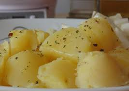

Patata Bullida

Description
The patata bullida is a typicial easy dish made when you are feeling sick.
Ingredients
- Patata
- Aigua
- Sal
- Pebre
- Molta gana
Steps
- Peel the potatoes
- Boil the water
- Put the potatoes to boil
- Serve them with a pinch of salt and pepper
- Good luck eating it